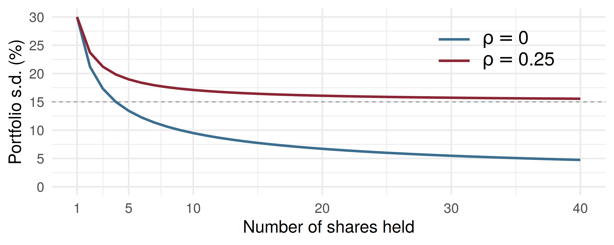

Code
rho var_p sd_p
1 -1.0 81 9.00
2 -0.5 171 13.08
3 0.0 261 16.16
4 0.3 315 17.75
5 0.5 351 18.73
6 1.0 441 21.00The Expected Value and Variance of Linear Functions; Portfolio Variance
ADA University, School of Business
Information Communication Technologies Agency, Statistics Unit
2026-09-24
By the end of this lecture, you will be able to:
State Theorem 5.12 for the mean, variance and covariance of linear functions
Compute the expected return and variance of a two- and three-asset portfolio
Explain why the variance of an equally weighted portfolio falls towards a floor set by the average covariance
Find the hedge ratio that minimises the variance of a position
Recognise \(\bar{Y}\) and \(\hat{p}\) as linear functions, with \(V(\bar{Y}) = \sigma^2/n\)
Wackerly §5.8
Last class ended on a question: the retailer’s expected revenue needed only the marginals. Which quantity about the revenue will need the covariance as well?
The variance. Expectation is linear and ignores dependence; the variance of a sum is where \(\text{Cov}(Y_1, Y_2)\) enters, and it enters with a factor of 2.
In finance that one fact has a name: portfolio variance. It is why holding two risky assets can be less risky than holding either one.
A Baku pension fund puts 100,000 AZN into two equity funds for a year:
| weight | mean return | s.d. of return | |
|---|---|---|---|
| Energy fund \((Y_1)\) | 0.6 | 12% | 25% |
| Telecom fund \((Y_2)\) | 0.4 | 8% | 15% |
The expected return is \(0.6(12) + 0.4(8) = 10.4\%\), the weighted average. Is the risk the weighted average too, \(0.6(25) + 0.4(15) = 21\%\)?
Only in one special case. Today’s theorem says which, and what the risk is otherwise.
Theorem 5.12
Let \(E(Y_i) = \mu_i\) and \(E(X_j) = \xi_j\). Define \(U_1 = \sum_{i=1}^n a_iY_i\) and \(U_2 = \sum_{j=1}^m b_jX_j\) for constants \(a_i\), \(b_j\). Then
\(E(U_1) = \sum_{i=1}^n a_i\mu_i\)
\(V(U_1) = \sum_{i=1}^n a_i^2V(Y_i) + 2\sum\sum_{1 \le i < j \le n} a_ia_j\text{Cov}(Y_i, Y_j)\)
\(\text{Cov}(U_1, U_2) = \sum_{i=1}^n\sum_{j=1}^m a_ib_j\text{Cov}(Y_i, X_j)\)
Part (a) is Theorems 5.7 and 5.8 again. Parts (b) and (c) are new, and (b) is a special case of (c), since \(\text{Cov}(Y_i, Y_i) = V(Y_i)\).
\[V(a_1Y_1 + a_2Y_2) = a_1^2V(Y_1) + a_2^2V(Y_2) + 2a_1a_2\text{Cov}(Y_1, Y_2)\]
The proof expands \(\left[\sum a_i(Y_i - \mu_i)\right]^2\): the \(n\) squared terms give the variances, and the \(n(n-1)\) cross terms pair up into \(2\sum\sum_{i<j}\).
Weight \(w\) in asset 1 and \(1 - w\) in asset 2. The portfolio return is a linear function, \(R_p = wY_1 + (1-w)Y_2\).
Portfolio mean and variance
\[E(R_p) = w\mu_1 + (1-w)\mu_2\] \[V(R_p) = w^2\sigma_1^2 + (1-w)^2\sigma_2^2 + 2w(1-w)\rho\,\sigma_1\sigma_2\]
The last term uses \(\text{Cov}(Y_1, Y_2) = \rho\sigma_1\sigma_2\) from Definition 5.11. With \(\rho = 1\) the bracket is a perfect square, \(V(R_p) = [w\sigma_1 + (1-w)\sigma_2]^2\), and the weighted-average s.d. is exact.
Energy and telecom returns have correlation \(\rho = 0.3\), so \(\text{Cov}(Y_1, Y_2) = 0.3(25)(15) = 112.5\) (in \(\%^2\)).
\[V(R_p) = 0.36(625) + 0.16(225) + 2(0.6)(0.4)(112.5) = 225 + 36 + 54 = 315\]
\(\sigma_{R_p} = \sqrt{315} = 17.75\%\), not 21%. On 100,000 AZN: an expected gain of 10,400 AZN with a standard deviation of 17,748 AZN.
Same expected return, 3.25 points less risk. That gap is diversification, and it exists whenever \(\rho < 1\).
rho var_p sd_p
1 -1.0 81 9.00
2 -0.5 171 13.08
3 0.0 261 16.16
4 0.3 315 17.75
5 0.5 351 18.73
6 1.0 441 21.00The expected return is 10.4% in every row. Only the risk moves, from 21% at \(\rho = 1\) down to 9% at \(\rho = -1\).
sdP = (w, r) => Math.sqrt(w*w*625 + (1-w)*(1-w)*225 + 2*w*(1-w)*r*375)
riskCurve = Array.from({length: 101}, (_, i) => ({w: i/100, s: sdP(i/100, rho_ET)}))
wStar = Math.min(1, Math.max(0, (225 - rho_ET*375) / (625 + 225 - 2*rho_ET*375)))
best = [{w: wStar, s: sdP(wStar, rho_ET)}]
md`Lowest risk: **${best[0].s.toFixed(1)}%** with **${(100*wStar).toFixed(0)}%** in energy.`Plot.plot({
width: 1150,
height: 300,
marginLeft: 78,
marginBottom: 58,
style: {fontSize: "18px"},
x: {label: "Weight w in the energy fund", domain: [0, 1]},
y: {label: "Portfolio s.d. (%)", domain: [0, 26]},
marks: [
Plot.line([{w: 0, s: 15}, {w: 1, s: 25}], {x: "w", y: "s", stroke: "#cbb8a9", strokeDasharray: "4 4"}),
Plot.line(riskCurve, {x: "w", y: "s", stroke: "#14130f", strokeWidth: 2.5}),
Plot.dot(best, {x: "w", y: "s", r: 8, fill: "#8b2635"}),
Plot.ruleY([0])
]
})The fund rebalances to 50% energy, 30% telecom and 20% an AZN government bond fund \((Y_3)\): mean 6%, s.d. 5%.
| \(\text{Cov}\) with telecom | \(\text{Cov}\) with bonds | |
|---|---|---|
| Energy | \(0.3(25)(15) = 112.5\) | \(-0.2(25)(5) = -25\) |
| Telecom | \(0.1(15)(5) = 7.5\) |
Theorem 5.12(b): three variance terms and three pairs, \[V(R_p) = 156.25 + 20.25 + 1 + 2(.5)(.3)(112.5) + 2(.5)(.2)(-25) + 2(.3)(.2)(7.5)\] \[= 177.5 + 33.75 - 5 + 0.9 = 207.15, \qquad \sigma_{R_p} = 14.39\%\]
w <- c(energy = 0.5, telecom = 0.3, bonds = 0.2)
mu <- c(12, 8, 6)
sd <- c(25, 15, 5)
R <- matrix(c( 1.0, 0.3, -0.2,
0.3, 1.0, 0.1,
-0.2, 0.1, 1.0), 3, 3)
Sigma <- diag(sd) %*% R %*% diag(sd) # covariance matrix
c(mean = sum(w * mu),
var = drop(t(w) %*% Sigma %*% w),
sd = sqrt(drop(t(w) %*% Sigma %*% w))) mean var sd
9.60000 207.15000 14.39271 \(w^\top\Sigma w\) is Theorem 5.12(b) with all \(n^2\) terms written out: each off-diagonal pair appears twice, which is the factor 2.
Take \(n\) assets, each with variance \(\sigma^2\) and every pair with covariance \(\rho\sigma^2\). Put \(a_i = 1/n\) in Theorem 5.12(b):
\[V(R_p) = n\cdot\frac{1}{n^2}\sigma^2 + 2\cdot\frac{n(n-1)}{2}\cdot\frac{1}{n^2}\rho\sigma^2 = \frac{\sigma^2}{n} + \left(1 - \frac{1}{n}\right)\rho\sigma^2\]
The first term is risk specific to each asset; the second is risk shared by the whole market.
n <- 1:40; s <- 30
df <- rbind(data.frame(n = n, sd = sqrt(s^2 / n + (1 - 1/n) * 0.25 * s^2), case = "r25"),
data.frame(n = n, sd = sqrt(s^2 / n), case = "r0"))
ggplot(df, aes(n, sd, colour = case)) +
geom_hline(yintercept = 15, linetype = "dashed", colour = "grey55") +
geom_line(linewidth = 1.4) +
scale_colour_manual(values = c(r25 = "#8b2635", r0 = "#3d6e8f"),
labels = c(r25 = expression(rho == 0.25), r0 = expression(rho == 0)),
name = NULL) +
scale_x_continuous(breaks = c(1, 5, 10, 20, 30, 40)) +
scale_y_continuous(breaks = seq(0, 30, 5), limits = c(0, 30)) +
labs(x = "Number of shares held", y = "Portfolio s.d. (%)") +
theme(legend.position = c(0.8, 0.8),
legend.text = element_text(size = 22, hjust = 0),
legend.key.width = unit(1.6, "cm"))
Shares with \(\sigma = 30\%\): at \(\rho = 0.25\), ten shares give 17.1% and thirty give 15.7%, never below \(\sqrt{0.25 \times 900} = 15\%\).
A Sumqayit fuel distributor’s monthly margin \(Y_1\) (thousand AZN) shrinks when crude prices rise. It buys \(h\) oil-linked contracts, each with value change \(Y_2\). The position is \(H = Y_1 + hY_2\).
\[V(H) = V(Y_1) + h^2V(Y_2) + 2h\,\text{Cov}(Y_1, Y_2)\] A parabola in \(h\). Setting the derivative to zero: \[h^* = -\frac{\text{Cov}(Y_1, Y_2)}{V(Y_2)}, \qquad V(H^*) = V(Y_1)(1 - \rho^2)\]
Negative covariance makes \(h^* > 0\): buy the asset that moves against you.
\(\sigma_1 = 40\), \(\sigma_2 = 8\) (thousand AZN), \(\rho = -0.8\), so \(\text{Cov}(Y_1, Y_2) = -0.8(40)(8) = -256\).
\[h^* = \frac{256}{64} = 4 \text{ contracts}\] \[V(H^*) = 1600 + 16(64) + 2(4)(-256) = 1600 + 1024 - 2048 = 576\]
The s.d. falls from 40 to \(\sqrt{576} = 24\) thousand AZN, as \(40\sqrt{1 - 0.64} = 24\) predicts.
A hedge removes the correlated part of the risk. The remaining 24 comes from what the contract does not track.
Back to the energy fund \(Y_1\) and telecom fund \(Y_2\): means 12 and 8, variances 625 and 225, \(\text{Cov}(Y_1, Y_2) = 112.5\).
Client A holds \(U = 0.5Y_1 + 0.5Y_2\). Client B runs a long-short book, \(W = Y_1 - Y_2\).
Four minutes, in pairs:
Find \(E(W)\) and \(V(W)\).
Use Theorem 5.12(c) to find \(\text{Cov}(U, W)\).
Can \(U\) and \(W\) be independent?
\(E(W) = 12 - 8 = 4\%\) and \(V(W) = 625 + 225 - 2(112.5) = 625\), so \(\sigma_W = 25\%\).
With \(a = (0.5, 0.5)\) and \(b = (1, -1)\), four terms: \[\text{Cov}(U, W) = 0.5(625) - 0.5(112.5) + 0.5(112.5) - 0.5(225) = 200\]
The long-short book looks “market neutral”, yet its return still moves with client A’s portfolio.
\(V(Y_1) = 4\), \(V(Y_2) = 9\) and \(\text{Cov}(Y_1, Y_2) = 2\). What is \(V(Y_1 - Y_2)\)?
Sixteen independent shares each have s.d. 20%. What is the s.d. of the equally weighted portfolio?
A bank reviews \(n = 400\) loans, each defaulting independently with \(p = 0.05\), and estimates the rate by \(\hat{p} = Y/n\). What is the s.d. of \(\hat{p}\)?
| Statement | |
|---|---|
| Theorem 5.12(a) | \(E\left(\sum a_iY_i\right) = \sum a_i\mu_i\) |
| Theorem 5.12(b) | \(V\left(\sum a_iY_i\right) = \sum a_i^2V(Y_i) + 2\sum\sum_{i<j}a_ia_j\text{Cov}(Y_i, Y_j)\) |
| Theorem 5.12(c) | \(\text{Cov}\left(\sum a_iY_i, \sum b_jX_j\right) = \sum\sum a_ib_j\text{Cov}(Y_i, X_j)\) |
| two assets | \(V(R_p) = w^2\sigma_1^2 + (1-w)^2\sigma_2^2 + 2w(1-w)\rho\sigma_1\sigma_2\) |
| \(n\) equal weights | \(V(R_p) = \sigma^2/n + (1 - 1/n)\rho\sigma^2\) |
| hedge | \(h^* = -\text{Cov}(Y_1, Y_2)/V(Y_2)\), \(\; V(H^*) = V(Y_1)(1 - \rho^2)\) |
| Examples 5.27, 5.28 | \(V(\bar{Y}) = \sigma^2/n\), \(\; V(\hat{p}) = pq/n\) |
The mean of a linear function needs only the means; the variance needs every covariance
Constants enter the variance squared, and each pair’s covariance enters twice
Portfolio risk is below the weighted-average risk whenever \(\rho < 1\)
Diversification drives specific risk to zero, but shared risk sets a floor of \(\rho\sigma^2\)
A negatively correlated asset, held in the right amount, cuts variance by the factor \(1 - \rho^2\)
\(\bar{Y}\) and \(\hat{p}\) are linear functions, which is how Chapters 9 and 11 will use this theorem
Wackerly, 7th edition
§5.8: Exercises from 5.102 onwards; start with 5.102, 5.103, 5.110, 5.112 and 5.113
Redo the pension fund with \(\rho = -0.3\). What weight in energy minimises the risk?
Week 14, Problem Set 1 is open now and closes Sunday 20 December at 23:59 on WeBWorK, covering §5.8.
Quiz II is on 12 December, in the first 30 minutes of class: Chapter 4 and §§5.1–5.8, including today.
Next class: 12 December, after the quiz: the multinomial probability distribution (Wackerly §5.9).
Dr. Samir Orujov
📧 sorujov@ada.edu.az
🏢 Building D, Room D325
🕓 Office hours: Wednesday, 16:00 – 18:00
Slides and readings: sorujov.net/teaching
At \(\rho = -1\), which weights make the two-fund portfolio riskless? Is a riskless portfolio of risky assets a paradox?
Doubling every weight doubles the expected return. What does it do to the variance?
Why can no amount of diversification across Baku-listed shares remove the risk of an oil-price fall?

Mathematical Statistics I - Linear Functions and Portfolio Variance